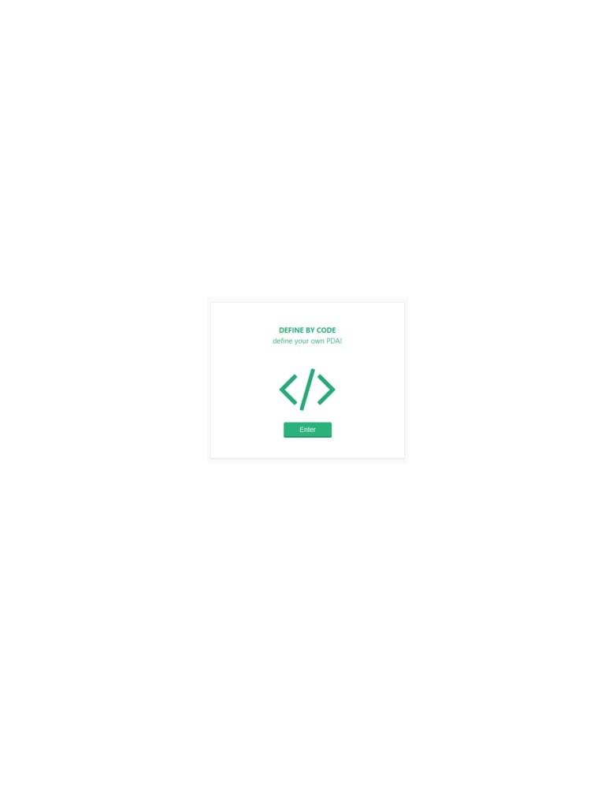
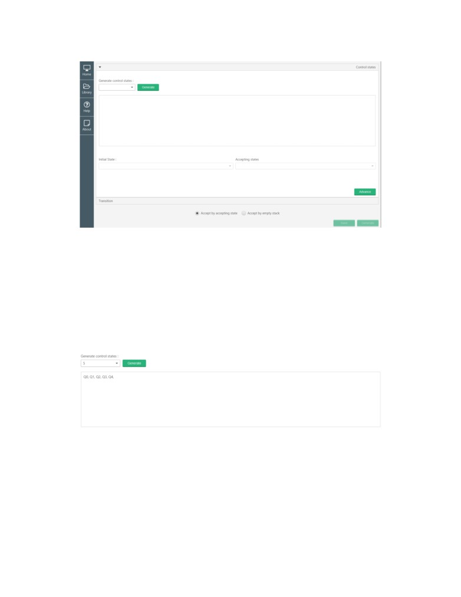
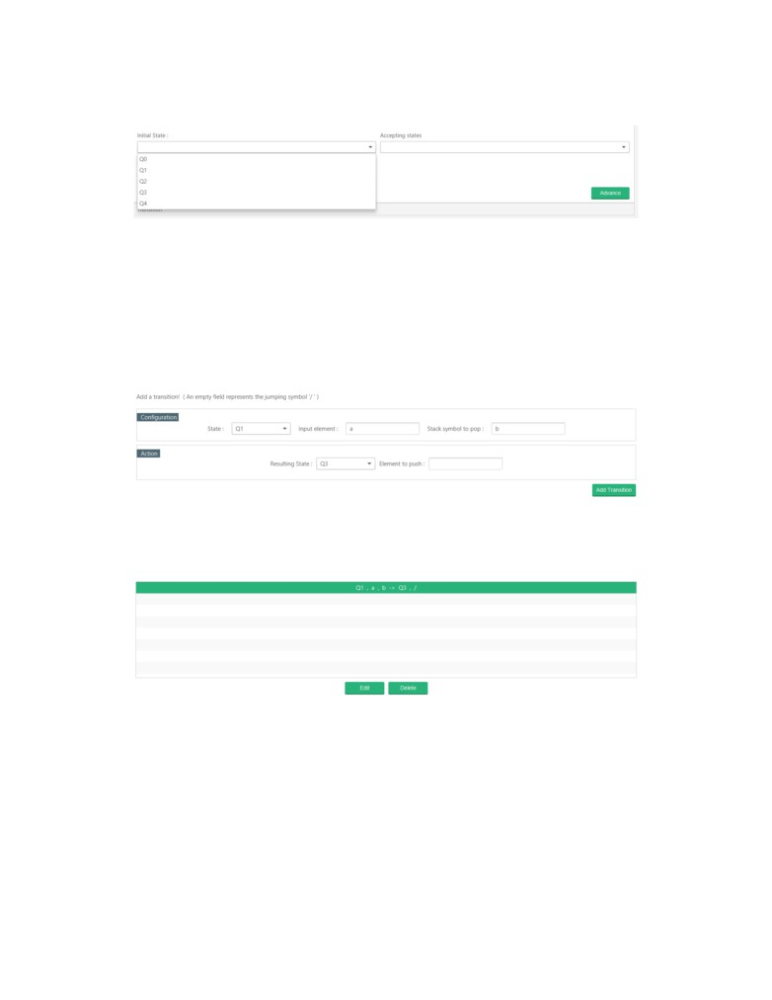
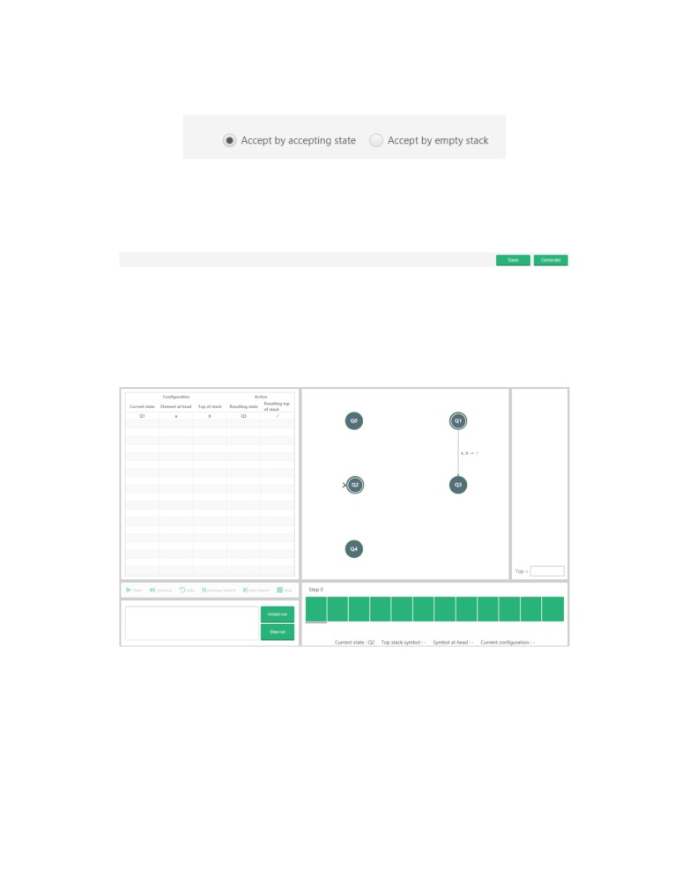
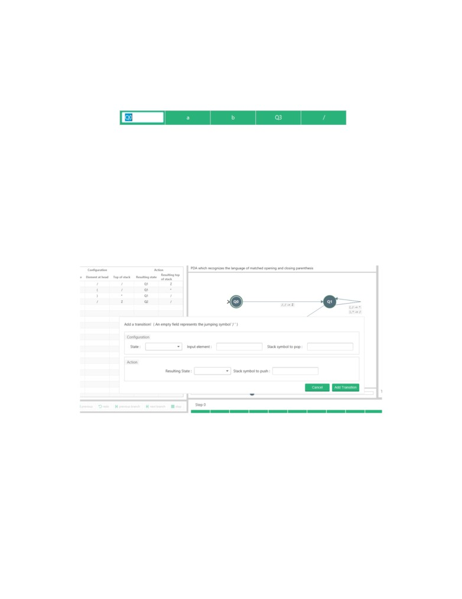
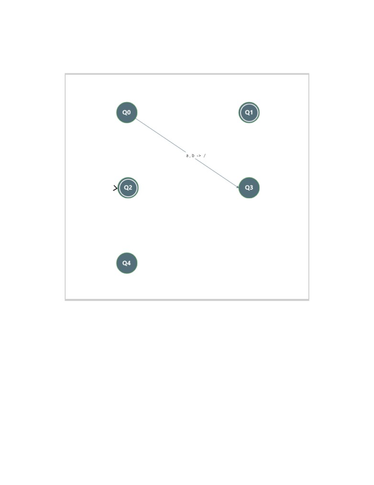

B.1
Creation and Manipulation of PDAs
Initially, a definition specification describes the requested PDA; this definition is specified by
the user. The application then assesses the correctness of the definition, either accepting or
rejecting it. In the case where the system accepts, the PDA’s definition is saved to memory. It’s
now recognized by the system and can be loaded by the user. When the PDA is requested, its
definition is retrieved from memory and loaded onto the system. The application requires this
definition to build the PDA. Once the PDA has fully been built, it becomes fully operational.
B.1.1
Definition
A user can define their own PDAs via the quick-definition feature. This is accessible from the
side-bar and the home page.
74

Clicking on the feature should open this definition window defined below.
This form is used to generate the PDA machine. The user must first specify the control states
involved in the push-down automata and click ”Advance” before specifying which transitions
are involved.
The user must choose the number of control states they want their PDA to have by choosing the
corresponding value in the drop-down and clicking generate. The user should see the generated
states in the control state terminal below.
75

From the generated control states, the user should choose their initial state and accepting
states.
When the user has selected their chosen states, they can advance to the next section via the
”Advance” button.
On the next section, it requires the user to define the transitions their PDA will have. Note:
the jumping symbol can be represented via an empty text field.
Adding a valid transition will add the transition to the current transition terminal.
76

The user can choose their acceptance criteria that their PDA will have (Accept by accepting
state is the default).
Once the user is happy with the specification, they can either generate the PDA straight away
or save it to memory before running it.
If there are mistakes with the definition provided, it will be made apparent to the user. Only
after the PDA has successfully been validated will the PDA machine be loaded.
The loaded PDA.
77

B.1.2
Modification
A PDA can be modified after it has been generated by the user.
Transitions can be modified via the transition table to left.
If one of the control state cells are being modified, either source or target, then the new state
specified must be an actual state. If this new state doesn’t exist then the change is rejected.
If the new control state is a valid one, then the change will be accepted and the PDA visual
display will update.
Transitions can also be added to a PDA after its been created via the ”Add Transition” button
in the toolbar. Clicking on it will open a dialogue box. This dialogue box will allow for a user
to define a new transition for the PDA.
The transition specified must have a source and target state and mustn’t be a duplicate transi-
tion. These are the prerequisites that must be reached for a transition to be successfully added.
An empty character field represents the jumping symbol.
78

Once the chosen transition has been successfully validated, it’s added to the current PDA
machine. It automatically updates the PDA visual and adds a new row to the transition table.
79